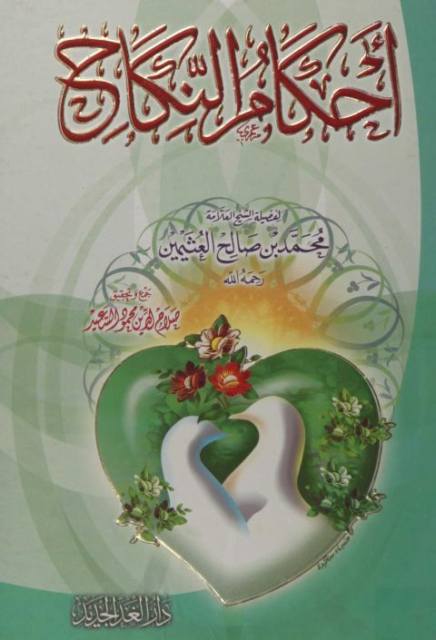
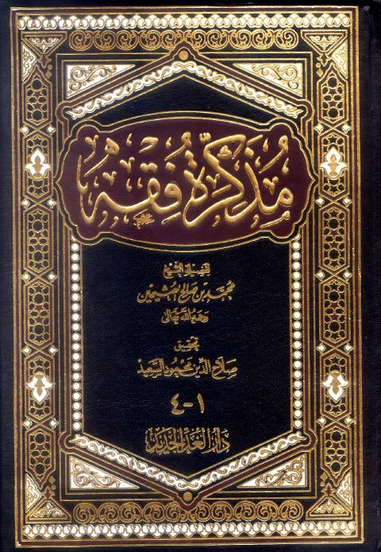
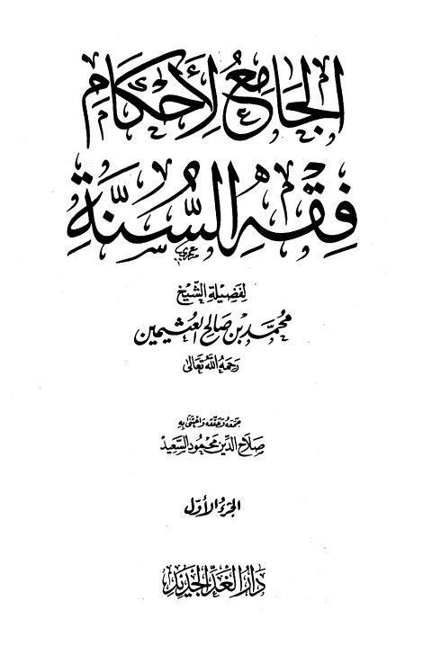
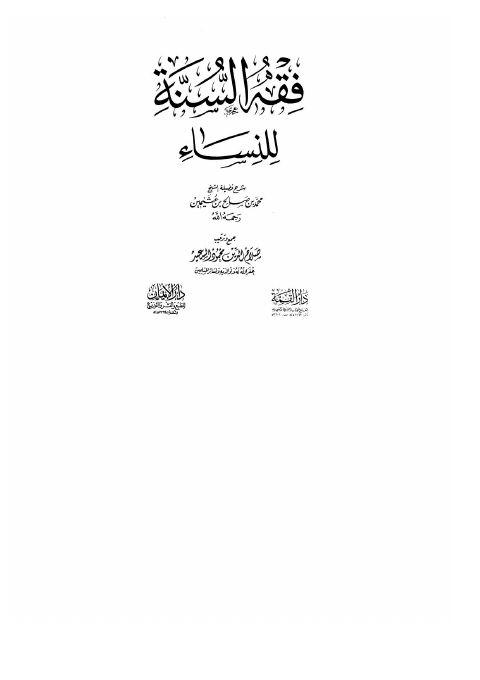
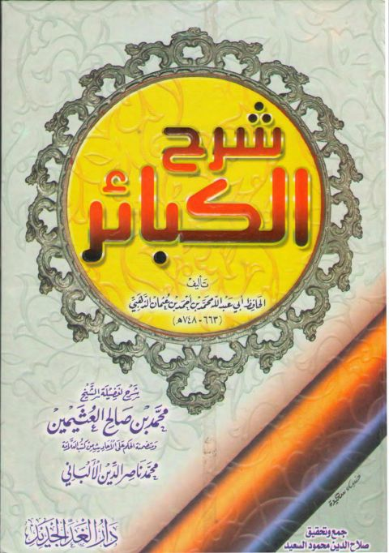

أحكام النكاح- العثيمين أحكام النكاح- العثيمين محمد بن صالح العثيمين
مذكرة فقه- دار الغد مذكرة فقه- دار الغد محمد بن صالح العثيمين
الجامع لأحكام فقه السنة الجامع لأحكام فقه السنة محمد بن صالح العثيمين
فقه السنة للنساء فقه السنة للنساء محمد بن صالح العثيمين
شرح كتاب الكبائر للحافظ محمد بن أحمد عثمان الذهبي شرح كتاب الكبائر للحافظ محمد بن أحمد عثمان الذهبي محمد بن صالح العثيمين